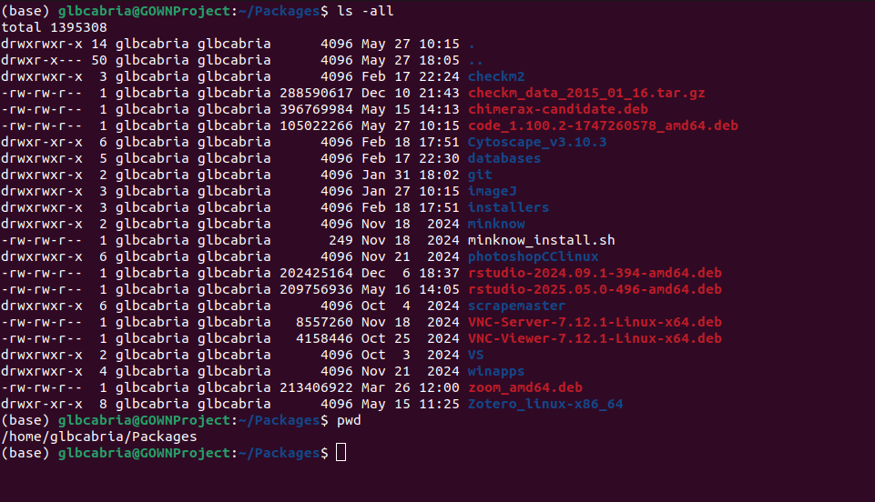

Lesson 1: The Terminal, the OS, and Bioinfo
“Unix Enviroment” and Bash Guide
Unix is an OS that originated from the 1960s and directly or indirectly the ancestors of most OS you can see today (Ubuntu, macOS, Android). However, whenever we say “unix or unix-like environment”, it often pertains to the command-line interface that are associated with programming and computer science. Before we start the tutorial, let us brief on the terminologies you’ll often hear.
| Terminologies | Definitions |
|---|---|
| OS or Operating Systems | are the main program that manages all other application programs and allows the interaction between the user and the computing hardware (e.g. Windows 11, macOS, Ubuntu) |
| Kernel | are core programs in an operating system that manage and bridge processes/programs and the hardware (e.g. Linux, Windows NT, etc.) |
| Shell | is the interface that you interact with the computer. This is primarily divided as GUI or graphical user interface and the CLI command-line interface |
| GUI | is the interface in which you utilise visual to interact with the computer |
| CLI | is the primary interface in which you interact with the computer through inputting lines of text or command-lines. CLI is often run in terminals such as command prompt in Windows |
| BASH | is a common programming language used in a unix-like environment. Primarily run through CLI |
| HPC or high performance computing | the ability to run programs with large number of cores or memory (RAMs). Primarily done in supercomputers or computer clusters |
Bioinformatics and the Unix’ CLI
Command line interface is primary mode of interaction when running in high performance computing clusters. The additional computing requirement often associated with graphical interface results in most bioinformatics programs and pipeline to be run through command-line interface. In addition to draining computing resources, running GUI-based programs often can be time consuming as you might need to manually click and analyse individual data. Meanwhile, through programming language such as BASH and other softwares in the command-line, you can parallelize your analysis.
In this tutorial, we will dive into the anatomy of a command-line interface command/program and learn the basic commands in the terminal and BASH to run your bioinformatic analyses.

Working with Terminals is oftern associated with old OSes or Linux. Windows OS also has a command-line interface, commonly known as Command Prompt or cmd. Additionally, you can have linux experience also within windows using the Windows Subsystem in Linux or WSL2.
To install WSL2: Windows Guide to WSL2
Accessing command-line
For your personal computers, you can access command-line interface through command prompt in Windows OS or the terminal app in MacOS and Linux OSes.
- To open command prompt on Windows:
- Search for Run in your search bar
- Type cmd and run it
- To open command prompt on MacOS:
- In Finder, go to Applications > Utilities
- Double-click Terminal
- For Ubuntu and Debian based Linux OS:
- Press your Home or Windows button
- And search Terminal
Other than your local desktop, there are ways to access the servers through command-line interface such as the University of Calgary’s ARC OnDemand service.

Exercise 1: Accessing Terminal
For this exercise we will be utilising a web-based terminal through the Binder and JupyterLab interface.
📝 Note: JupyterLab is an organizing program to run different programming language in uniform and replicable manner. It is a great tool for bioinformatics and data analysis. This guide is made through JupyterLabs and we will talk more about it in the future. Meanwhile, Binder is an online repository for Jupyter notebooks that allow reproducibility with colleages and anyone you want online.
To open a terminal in Binder, we will use the JupyterLab made for Happy Bell Bioinformatics (Lee, 2019):
- Open a Firefox (Preferrably)
- Click this link to open the Binder link
- Let the repository load and you should be able to see an image like this:

- Open the Terminal as shown.
📝 Note: Another option to practice is using the online terminal/linux simulation website Webminal
It requires registration but allows persistent memory in which you can save files generated.
Working with Terminals
Structure of a terminal command
Try running this command:
[/home/jovyan/unix_intro]$ ls /home/jovyan/ --all
The basic structure of command line interface often shows the current working directory [/home/joyvan/unix_intro] and followed by the $. Everything on the right of the $ are user inputed commands. Its structure often follow this structure:
- 1st:
<command> [arguments] [options]
-or- - 2nd:
<program> <command> [arguments] [options]
-or- - 3rd:
<program> [arguments] [options]
| Terminologies | Definitions |
|---|---|
| Program | The software to run your analysis. |
| Command | The operation within the software that needs to be performed to run your analysis |
| Arguments | Arguments are required field that indicate the user input |
| Options | Parameters that the user adds to pass on to the command to specify the detail of the run. Can be optional or mandatory. |
Options are often key-value pairs with the keys indicates as --keys and the values are the one indicated after a space or = | |
| Flags | Options that do not have key-value pair (e.g. –all above) |
In the above example, it followed the first structure. The ls is a command with the argument [FILE] showing the location or path of the file/folder of interest and is shown here as /home/jovyan/. The option here is --all which reveals all file and folder hidden.
Running the above code should display all files within the
FILEpath indicated:$ ls /home/jovyan/ --all total 64 drwxr-xr-x 1 jovyan jovyan 4096 Sep 17 17:28 . drwxr-xr-x 1 root root 4096 Dec 7 2022 .. -rw-r--r-- 1 jovyan jovyan 71 Dec 7 2022 apt.txt -rw-r--r-- 1 jovyan jovyan 220 Apr 4 2018 .bash_logout -rw-r--r-- 1 jovyan jovyan 4018 Dec 7 2022 .bashrc drwxr-xr-x 3 jovyan jovyan 4096 Sep 17 17:28 .cache drwxr-xr-x 8 jovyan jovyan 4096 Dec 7 2022 .git drwxr-xr-x 2 jovyan jovyan 4096 Sep 17 17:28 .ipython drwxr-xr-x 3 jovyan jovyan 4096 Sep 17 17:28 .jupyter -rw-r--r-- 1 jovyan jovyan 4908 Sep 17 17:29 .jupyter-server-log.txt drwxr-xr-x 3 jovyan jovyan 4096 Sep 17 17:28 .local -rw-r--r-- 1 jovyan jovyan 807 Apr 4 2018 .profile -rw-r--r-- 1 jovyan jovyan 395 Dec 7 2022 README.md drwxr-xr-x 5 jovyan jovyan 4096 Dec 7 2022 unix_intro
To learn more about the options of a program you can run man <program> to show its manual or <program/command> --help or <program/command> -h to show its help page.
Try Running this code:
ls --helpto see the other arguments of the program.📝 Note: Not all programs or commands have a manual or help page.
Running Commands
Try running this command:
head -n 5 example.txt
The command structure often has flexibility (not always) and you can run the options before the arguments or vice versa as shown above. The options -n 5 was run here in front of the arguments example.txt. The argument states the [File] that needs to be open. The abovesaid command works differently when you run it without the option -n 5.
Try Running this code:
head example.txt
Without the -n 5 option, the head command displays the first 10 lines of the text by default. Giving the -n 5 option forcefully change the output to the first five lines. Changing the option yields different number of lines you will display.
Other command that display text files are tail, more, less, and others. The command tail is the opposite of head and displays the lines from the bottom of the text. The more command displays all the lines in the text file after the comman-line while less displays the text files on a separate screen.
Try running these commmands
tail,more,less
Filepaths
When running the commands before, we only specify example.txt. This is because the example.txt is already located in our current working directory(CWD). To check our CWD, we can just look to the left of $ or subsequently try running the command:
pwd
The pwd command should display your current location: /home/jovyan/unix_intro. The filepath describes the address or location from the root/ and all the folders below it: jovyan and unix_intro. The subsequent forward slash/ after home are separator to determine the hierarchy of folders within the path.
The hierarchy can be visualised as this:
/ <-root directory
|
|___bin/
|___dev/
|___home/
|___jovyan/ <"~" or the username's 'home' folder
|___unix_intro <-current working directory
|___data/
|___example.txt
|___experiment/
|___six_commands/
The root / contains the folder bin, dev and home among others while home contains the folder jovyan which has the files.
To display again all the files and folder within that location, you can run ls. There should appear the file example.txt along with all other file.
✅ Notice: Running only
lsshows you just the name of the file. However, try runningls -land it should show you all the specifications of the file. This includes the accessibility of the file as indicated bydrwx. The user who made the file (jovyan). The usergroup that has access to the file (jovyan). The filesize in bytes (4096/1592) and the files and folders. The folders here are displayed in blue bold fonts while individual files are in white/black font.⚠️ Warning: Not all terminals has color distinction between files and folders. Better to check ‘fileszie’ as all folders has attribute of 4096
There are two types of filepath: absolute path and relative path. The absolute path is the location of the file from the root of the drive (e.g. /home/jovyan/unix_intro/example.txt) while relative path is the location of the file depending on your CWD (e.g. example.txt or ./example.txt).
📝 Note: In
./example.txtthe dot before the forward slash’/’ indicates that it is the current directory/home/jovyan/unix_intro/. Meanwhile,../indicates of the path above the current workind directory. In this case,../indicates the folder/home/jovyan/.
Therefore, we can have the same result while running the head command with the following examples:
head example.txt
head ./example.txt`head /home/jovyan/unix_intro/example.txt
Programs and commands can often interchangeably use absolute or relative path but several scripts/programs are created to follow only absolute or relative path. Please check the programs documentation thoroughly to prevent unwanted problems.
Moving paths
Unlike in GUI which you can use double-click or back button to move between folders and up and down a path, CLI needs to run a command when changing filepath or location. The primary command use to move paths is the cd or Change Directory command. The cd command is often follow by either absolute or relative path to change locations.
Try running this command:
cd ../../
This command should have move you two folders up your previous location. When you run pwd, you will see that you are in the /home folder. Now try to return to the previous working directory by running an absolute path as argument: cd /home/jovyan/unix_intro.
Additionally, from this CWD, if we want to go into the subfolders/subdirectories such as experiment/, we can just run cd experiment. Subsequently, we can return to our previous workind directory by running cd -.
Moving and copying files and folders
We also move files and folders using commands in CLI. To move files and folders we used the command mv. The format of this command is mv <original filepath> <destination filepath>. The filepaths can be absolute or relative.
Let us try moving example.txt to inside of data/ folder:
Try running this command:
mv ./example.txt ./data/Run:
ls ./And afterwards:
ls ./data/
As you can see, the example.txt did not appear now in ./ but is located in ./data/. We can use similar command when moving folders. Now, let us move back the file example.txt to its original location using mv ./data/example.txt ..
The mv command can be used also to rename files and folder. You can try renaming example.txt to any other name. An example: mv example.txt example_edited.txt2. Run a ls afterward.
⚠️ Warning: Renaming files to a filename that is already existing in the destination path would lead to overwriting of the file in the destination path with the file from the orginal filepath.
This is a irreversible process that would lead to the loss of the destination filepath’s original content.
Alternatively, you can copy file instead of moving it. When copying files and folder, run the command cp <original filepath> <destination filepath>. These command duplicates your file, so if the file has large sizes ~5-100GB, it might take a while to finish.
⚠️ Warning: Copying files observed the same pitfalls are the moving command. This command can overwrite the files in the destination path too. Be very careful!!!
Making text files
Files can be created through several ways. Programs can create output files based on their output parameters. You can also create your own text files by writing in a text editor. Akin to notepad in windows, you can write text files using several programs such as vim and nano. When creating new text files in this programs, just run the commands:
nano <path to folder destination>/<filename>
vim <path to folder destination>/<filename>An example:
nano ./data/newtextfile.txtextensioniwant
The previous example would create the text file newtextfile.txtextensioniwant inside the folder data/. If you notice, the file extension (anything beyond .) is not written as the usual .txt file extension. In most cases in a terminal, you can even drop the extension and it will still be treated as a text file. Extensions are just helpful guides for user to know what type of file or program run those file. More on this will be discuss in future lessons.
📝 Note: Windows text editors often have different way of representing
tabsornewlinesthan in MacOS and Linux OSes and can affect your program or analyses. However, they can still be open and edited in a Linux or MacOS terminal/text editor.📝 Note: Additionally, Microsoft Word files and other word processor are not recognize as text files as they are save in more elaborate file type.
The two text editors are what are often installed by default in different Linux OSes. Focus on learning just one as both can be overwhelming. To learn more on how to use this text editors, click on this links: nano and vim


Lastly, you can create an empty text file using the command touch <filename>.
Making folders
For folders, creating a new one requires the command mkdir <filepath>. You cannot create a new folder that already exists. The command will output a warning prompt. You can create multiple folders in a single command with multiple input arguments. When running the command, separating the folder names with spaces as shown:
mkdir test test1 test2 test3
Removing files and folders
To remove files, use the command rm. For folders with items in it, the command often will prompt you that it cannot remove a folder as it is a directory. You can run rm -r or the recursive option to delete the folder and all subsequent files inside it.
⚠️ Warning: Running this command will permanently delete your files. There is no trash bin to recover your files. So be very paranoid when removing files in important folders.
⚠️ Warning: You can delete other people’s file in a shared environment even if you do not have a permission to access those files. So be very careful and do not delete other people’s files.
⚠️ Warning: Again be very attentive in which files you are deleting. It would be better to delete files individually than in a batch, like deleting a whole folder.
Exercise 2: Creating files and folders
Let us test some skills you should have learn by now. Please do the following instructions:
- Go to your username’s home folder
- Create a folder named
Exercise2 - Go to the folder inside
unix_intronamedsix_commands - Get your current working directory
- Run
ls -alland copy its output by highlighting it with your mouse and using theright-clickbutton - Create a file inside the CWD named
exercise2.txtusingnano - Paste the text you have copy using
Ctrl+Shift+Vor the mouse - On the next seven lines, write the colors of the rainbow in any order
- Save your file using
^Xor colloquially known asCtrl+Xand thenYes - Copy that file to the previously made
Exercise2folder. - Rename the file using mv to
exercise2.<whateverextension you prefer> - View the file using either
more,less,headortailcommands
If there are any questions and problems. Do not hesitate to ask.
Tips and Summary
Basic Unix-like environment terms
| Terminologies | Definitions |
|---|---|
path | address of files and folder within the computer |
| CWD/PWD | the current or present working directory is the location of the terminal within the computer hierarchy. This is where you currently are. |
root | is the top-level directory in a computer partition |
root directory is represented as C:\ or D:\ in windows and \ in Linux or macOS | |
~ | the user’s home folder is where the personal files of the user is located. It is often the first location when booting a terminal. |
It can be represented as ~/ but is often located in /home/<username>/ | |
| absolute path | the address of file and folder from the specified ‘root’ or ‘home’ location |
| relative path | the path of files and folders based on your CWD |
./ | In relative path, this indicate the CWD |
../ | In relative path, this indicate the folder above the CWD |
- | When running the cd command, - represents the previous working directory |
Commands in this lecture:
| Commands | Definitions |
|---|---|
ls | The list command shows the files and folder inside the supplied ARGUMENT |
head | The head command shows the top lines within the ARGUMENT supplied text file |
tail | The opposite of head. The tail shows the bottom lines |
more | Displays a text file within the terminal |
less | Displays a text file in the terminal on a separate screen instance |
pwd | a command to show the current or present working directory |
cd | The change directory command moves the current working directory |
mv | The move command moves files and folders from the <orginal filepath> to the <destination filepath> |
cp | The copy command creates a copy of files from the <orginal filepath> to the <destination filepath> |
mkdir | creates a new directory |
rm | The remove command deletes a file or folder |
| ⚠️ Warning: There is no trash bin in the terminal or linux. Deleted files are deleted permanently | |
nano | A text-editor. Create a file by running nano <filename> |
vim | Another text-editor similar to previous one |
| –help | is a flag that aids in identifying all the arguments of most of the command displayed above |
Acknowledgement
This tutorial is adapted from Intro to Unix from Happy Belly Bioinformatics by Michael D. Lee or known as AstroBioMike in github.
Citation
[1] Lee, (2019). Happy Belly Bioinformatics: an open-source resource dedicated to helping biologists utilize bioinformatics. Journal of Open Source Education, 4(41), 53, https://doi.org/10.21105/jose.00053